RadialGradient QML Type
Draws a radial gradient. More...
| Import Statement: | import QtGraphicalEffects 1.0 |
| Since: | QtGraphicalEffects 1.0 |
| Inherits: |
Properties
- angle : real
- cached : bool
- gradient : Gradient
- horizontalOffset : real
- horizontalRadius : real
- source : variant
- verticalOffset : real
- verticalRadius : real
Detailed Description
A gradient is defined by two or more colors, which are blended seamlessly. The colors start from the middle of the item and end at the borders.
| Effect applied |
|---|
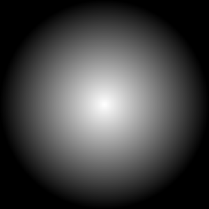 |
Example
The following example shows how to apply the effect.
import QtQuick 2.0 import QtGraphicalEffects 1.0 Item { width: 300 height: 300 RadialGradient { anchors.fill: parent gradient: Gradient { GradientStop { position: 0.0; color: "white" } GradientStop { position: 0.5; color: "black" } } } }
Property Documentation
angle : real |
This property defines the rotation of the gradient around its center point. The rotation is only visible when the horizontalRadius and verticalRadius properties are not equal. The angle is given in degrees and the default value is 0.
| Output examples with different angle values | ||
|---|---|---|
| 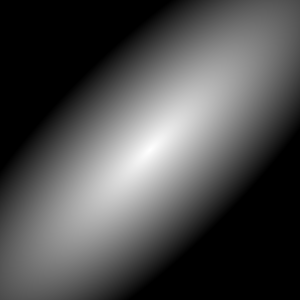 | 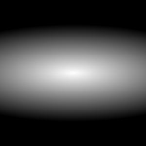 |
| angle: 0 | angle: 45 | angle: 90 |
| horizontalOffset: 0 | horizontalOffset: 0 | horizontalOffset: 0 |
| verticalOffset: 0 | verticalOffset: 0 | verticalOffset: 0 |
| horizontalRadius: 100 | horizontalRadius: 100 | horizontalRadius: 100 |
| verticalRadius: 300 | verticalRadius: 300 | verticalRadius: 300 |

cached : bool |
This property allows the effect output pixels to be cached in order to improve the rendering performance.
Every time the source or effect properties are changed, the pixels in the cache must be updated. Memory consumption is increased, because an extra buffer of memory is required for storing the effect output.
It is recommended to disable the cache when the source or the effect properties are animated.
By default, the property is set to false.
gradient : Gradient |
A gradient is defined by two or more colors, which are blended seamlessly. The colors are specified as a set of GradientStop child items, each of which defines a position on the gradient from 0.0 to 1.0 and a color. The position of each GradientStop is defined by setting the position property. The color is defined by setting the color property.
| Output examples with different gradient values | ||
|---|---|---|
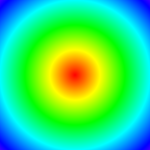 | 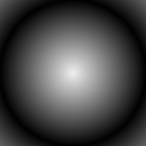 | 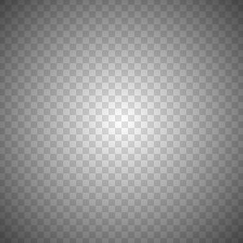 |
gradient:Gradient {
GradientStop { position: 0.000
color: Qt.rgba(1, 0, 0, 1) }
GradientStop { position: 0.167;
color: Qt.rgba(1, 1, 0, 1) }
GradientStop { position: 0.333;
color: Qt.rgba(0, 1, 0, 1) }
GradientStop { position: 0.500;
color: Qt.rgba(0, 1, 1, 1) }
GradientStop { position: 0.667;
color: Qt.rgba(0, 0, 1, 1) }
GradientStop { position: 0.833;
color: Qt.rgba(1, 0, 1, 1) }
GradientStop { position: 1.000;
color: Qt.rgba(1, 0, 0, 1) }
}
| gradient:Gradient {
GradientStop { position: 0.0
color: "#F0F0F0"
}
GradientStop { position: 0.5
color: "#000000"
}
GradientStop { position: 1.0
color: "#F0F0F0"
}
}
| gradient:Gradient {
GradientStop { position: 0.0
color: "#00000000"
}
GradientStop { position: 1.0
color: "#FF000000"
}
}
|
| horizontalOffset: 0 | horizontalOffset: 0 | horizontalOffset: 0 |
| verticalOffset: 0 | verticalOffset: 0 | verticalOffset: 0 |
| horizontalRadius: 300 | horizontalRadius: 300 | horizontalRadius: 300 |
| verticalRadius: 300 | verticalRadius: 300 | verticalRadius: 300 |
| angle: 0 | angle: 0 | angle: 0 |
horizontalOffset : real |
The HorizontalOffset and verticalOffset properties define the offset in pixels for the center point of the gradient compared to the item center.
The values range from -inf to inf. By default, these properties are set to 0.
| Output examples with different horizontalOffset values | ||
|---|---|---|
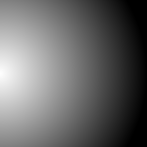 | 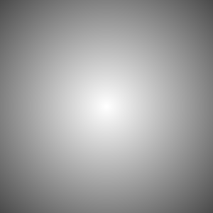 | 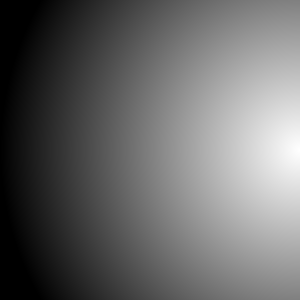 |
| horizontalOffset: -150 | horizontalOffset: 0 | horizontalOffset: 150 |
| verticalOffset: 0 | verticalOffset: 0 | verticalOffset: 0 |
| horizontalRadius: 300 | horizontalRadius: 300 | horizontalRadius: 300 |
| verticalRadius: 300 | verticalRadius: 300 | verticalRadius: 300 |
| angle: 0 | angle: 0 | angle: 0 |
horizontalRadius : real |
The HorizontalRadius and verticalRadius properties define the shape and size of the radial gradient. If the radiuses are equal, the shape of the gradient is a circle. If the horizontal and vertical radiuses differ, the shape is elliptical. The radiuses are given in pixels.
The value ranges from -inf to inf. By default, horizontalRadius is bound to width and verticalRadius is bound to height.
| Output examples with different horizontalRadius values | ||
|---|---|---|
| 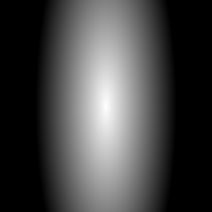 | |
| horizontalRadius: 300 | horizontalRadius: 100 | |
| horizontalOffset: 0 | horizontalOffset: 0 | |
| verticalOffset: 0 | verticalOffset: 0 | |
| verticalRadius: 300 | verticalRadius: 300 | |
| angle: 0 | angle: 0 | |
| gradient: QQuickGradient(0xa05fb10) | gradient: QQuickGradient(0xa05fb10) |

source : variant |
This property defines the item that is going to be filled with gradient. Source item gets rendered into an intermediate pixel buffer and the alpha values from the result are used to determine the gradient's pixels visibility in the display. The default value for source is undefined and in that case whole effect area is filled with gradient.
| Output examples with different source values | ||
|---|---|---|
| 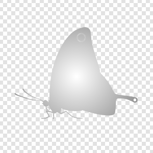 | |
| source: undefined | source: Image { source: images/butterfly.png } | |
| horizontalOffset: 0 | horizontalOffset: 0 | |
| verticalOffset: 0 | verticalOffset: 0 | |
| horizontalRadius: 300 | horizontalRadius: 300 | |
| verticalRadius: 300 | verticalRadius: 300 | |
| angle: 0 | angle: 0 |

Note: It is not supported to let the effect include itself, for instance by setting source to the effect's parent.
verticalOffset : real |
verticalRadius : real |